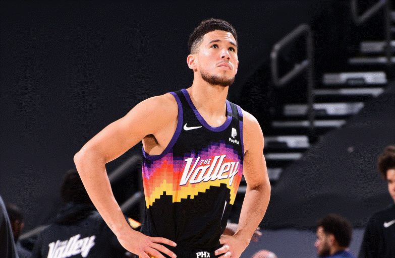

Ledgendery BasketBall players
Kobe Bryant
Kobe Bryant – January 26, 2020 was an American professional basketball player. A shooting guard, he spent his entire 20-year career with the Los Angeles Lakers in the National Basketball Association (NBA). Widely regarded as one of the greatest players in the history of the sport, Bryant won five NBA championships and was an 18-time All-Star, a 15-time member of the All-NBA Team, a 12-time member of the All-Defensive Team, the 2008 NBA Most Valuable Player (MVP), and a two-time NBA Finals MVP. He also led the NBA in scoring twice and ranks fourth in league all-time regular season and postseason scoring. He was posthumously voted into the Naismith Memorial Basketball Hall of Fame in 2020 and named to the NBA 75th Anniversary Team in 2021.--Reason of Death: Helecopter CrashDevin Booker
Devin Armani Booker (born October 30, 1996) is an American professional basketball player for the Phoenix Suns of the National Basketball Association (NBA). After playing college basketball for one season with the Kentucky Wildcats,[1][2] Booker was selected by the Suns in the first round of the 2015 NBA draft with the 13th overall pick. In 2017, at 20 years old, he became the youngest player to score over 60 points in a game, finishing with a Suns franchise record 70 against the Boston Celtics.[3] In 2019, at 22 years old, Booker became the youngest player in NBA history with consecutive 50-point games.[4] The son of former basketball player Melvin Booker,[5] Devin is a four-time All-Star, a two-time All-NBA member, and helped the Suns reach the NBA Finals in 2021. The following season, he was named to the All-NBA First Team and helped lead the Suns to a franchise record of 64 wins. Booker also won a gold medal on the 2020 U.S. Olympic team in Tokyo.